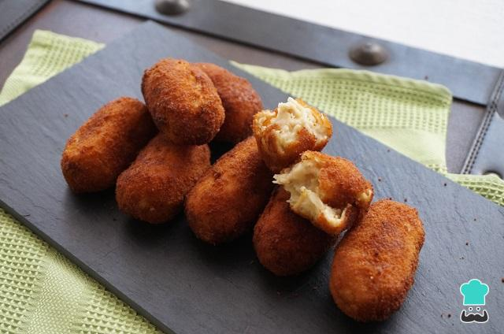
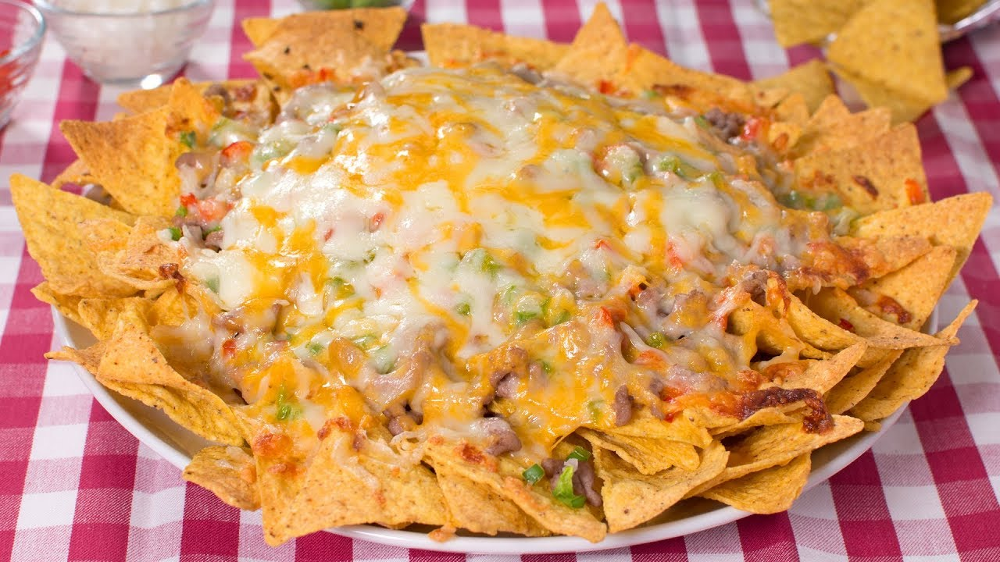
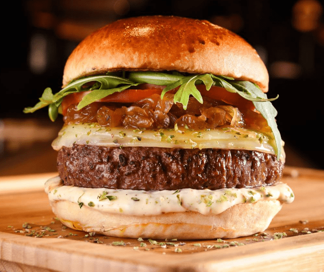
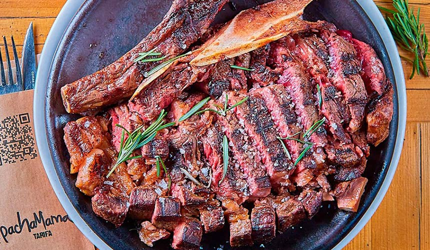
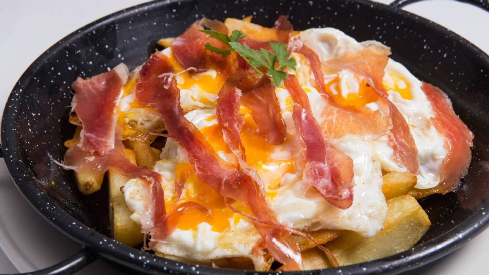
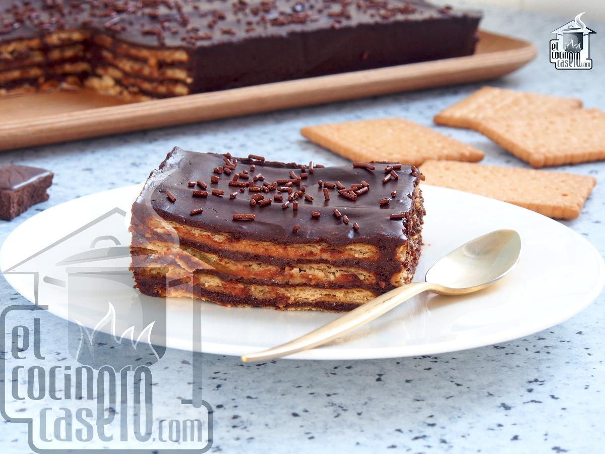
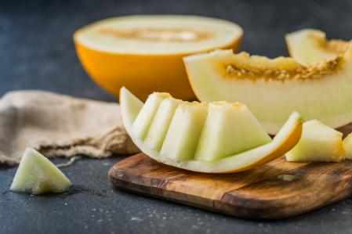

Ensalada fresca, con lechuga, tomate, atún, maiz, zanahoria, pollo y salsa césar

Croqueta con cremosa bechamel recubierta con una crujiente corteza de pan rayado junto a un interior de puchero andaluz
Nachos crujientes con queso, carne picada, jalapeños y una rica salsa
Rica hamburguesa de carne de angus madurada 200 días, con ingredientes a elegir
Entrecot al punto con una pizca de sal del Himalaya
Huevos mezclados con patatas fritas y jamón ibérico cortado en taquitos
Tarta de tres chocolates, con una base de galleta y galleta triturada por encima
Tarta casera con café polveado por encima

Melón cortado natural con una pizca de azúcar por encima
